Glom Screenshots
Contents
As an operator:
As a developer:
As an Operator
Connecting
When you open a Glom file it will try to connect to your database server, where the data is stored. Your administrator will give you a username and password.
Choosing a Table
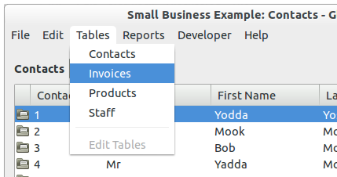
Each database has several tables, such as Contacts, Invoices, Products, etc. Choose a table to see the records.
Developers can add new tables, define the fields in each table, and define the relationships between the tables.
Developers can also see extra hidden tables, such as Invoice Lines, that would only be visible to an operator as related records from another table, such as Invoices.
The List View
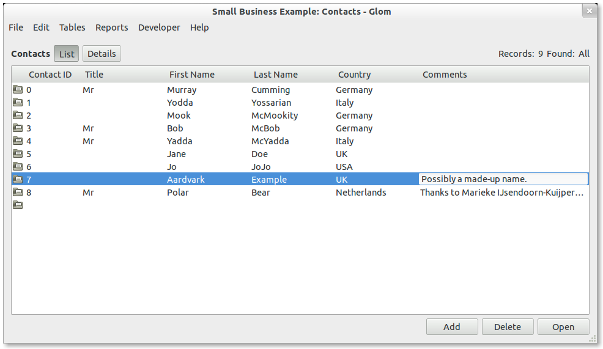
The list view shows all records in the table, or all currently-found records. When you enter data in the fields it is saved immediately. Choose Edit, or double-click, to see a record in detail.
Developers can choose what fields to show by designing the layout.
Developers can choose who may view or edit these records, as well as who can create or delete records here, by designing the users and groups.
The Details View
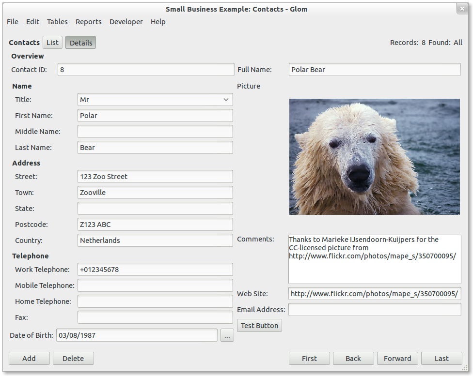
The details view shows the whole record, with the fields arranged conveniently.
Developers can choose what fields to show by designing the layout.
Developers can choose who may view or edit these records, as well as who can create or delete records here, by designing the users and groups.
The Details View - related records
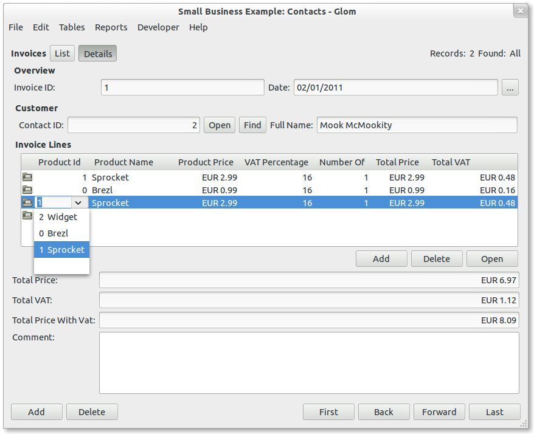
The details view can show records from a related table. Just enter new data in the list of related records to create a new record in the related table.
Note that this example shows related records from the Invoice Lines table. When you add a new row here, a new related record will be created with the appropriate value in the key field.
Producing Reports
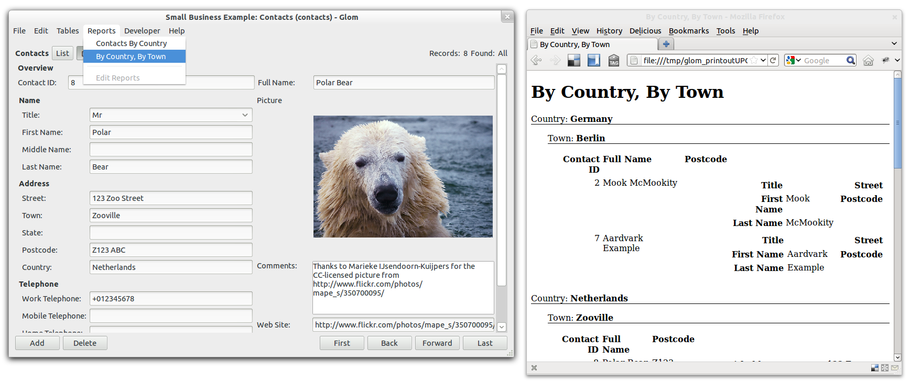
The Reports menu lists reports that the developer has created for you. Just choose the report from the menu.
As a Developer
Designing Fields
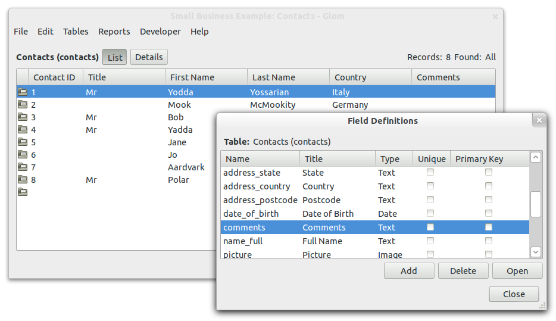
Each table has several fields, containing information about the items in the table.
Unlike traditional (difficult) database systems, there are only a handful of field types - text, number, data, time, and boolean. So you don't need to choose between signed or unsigned values, small numbers or big numbers, string lengths, or date storage formats.
Each table must have one primary key. The primary key value identifies the record and can be used to build relationships between tables. When you create a new table, the primary key will be created for you automatically.
Feel free to rename fields and change their type if you change your mind. The details and lists layouts will be updated automatically.
Designing Fields in detail
Choose Edit to see the full details for the field. Here you can specify a human-readable title to be shown on the list and details views. You can also define a default value, a lookup, or calculation, and whether the field should have a unique value.
Designing Fields - lookup
Some fields should copy their value from another table. For instance, an invoice should store the price of a product at the time the invoice was created. So you could specify that the Product Price field in Invoice Lines should get it's value from the Products table whenever the Product ID field changes in Invoice lines. If you have already defined the relationship between the two tables then you just need to choose the relationship, and the field from which to copy the value.
Designing Fields - calculation
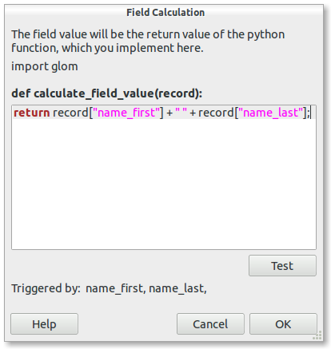
Some fields should be filled in automatically by calculating a value based on other fields. You can do this with the python programming language.
Designing Relationships
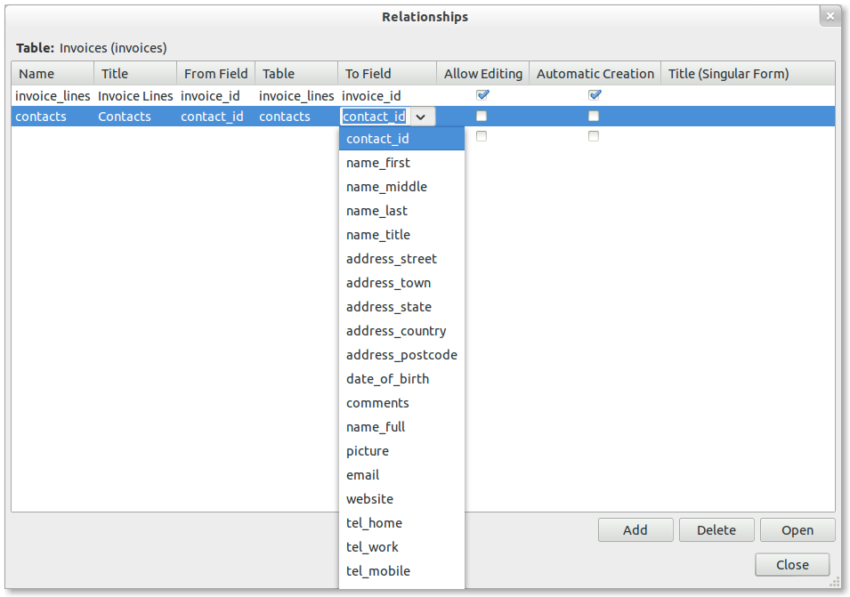
The tables in a relational database are related, so that the data from one table can be used by another table. A relationship can be used to lookup data from a field in another table, or to show a list of related records.
You can specify whether the relationship should automatically create related records. For instance,
- You would want to automatically create new Invoice Lines from the Invoice details, via the related records, without first creating the records in the Invoice Lines table itself.
- When you show the customer's name on the Invoice, using a related field, you probably don't want to create a new customer record by entering data in to the related field. Of course, if you don't even want to edit an existing customer name record via the Invoice then you can just make the related field non-editable.
Designing the Details Layout
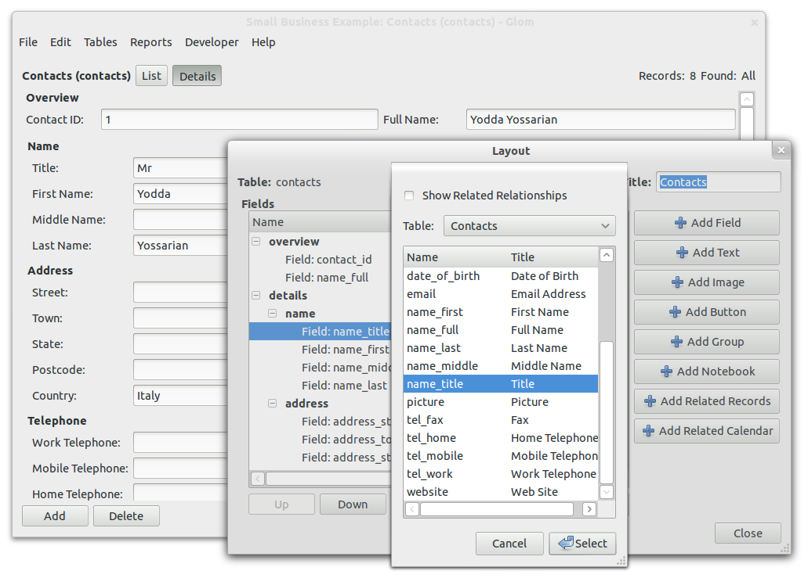
There are no complicated display options - dates and times are displayed and interpreted appropriately according to the user's current locale, but are always stored in the database in standard ISO format. And boolean fields are represented by a check box.
You can arrange fields and related records in groups which are layed out automatically, instead of wasting time with difficult manual positioning. This also allows your layout to be displayed in different languages and fonts, without manual changes.
You can can choose who may view or edit records in this table, as well as who may create or delete records, by designing the users and groups.
For numeric fields, you can specify formatting, such as a currency symbol, or the number of decimal places to show.
You may also specify possible choices for data entry, such as "Mr, Ms, Mrs, Miss" for a contact's title, or a list of product IDs (with the product names shown too) from the products table. These will be shown in a drop-down
menu for the field.
Designing the Details Layout - Related Records
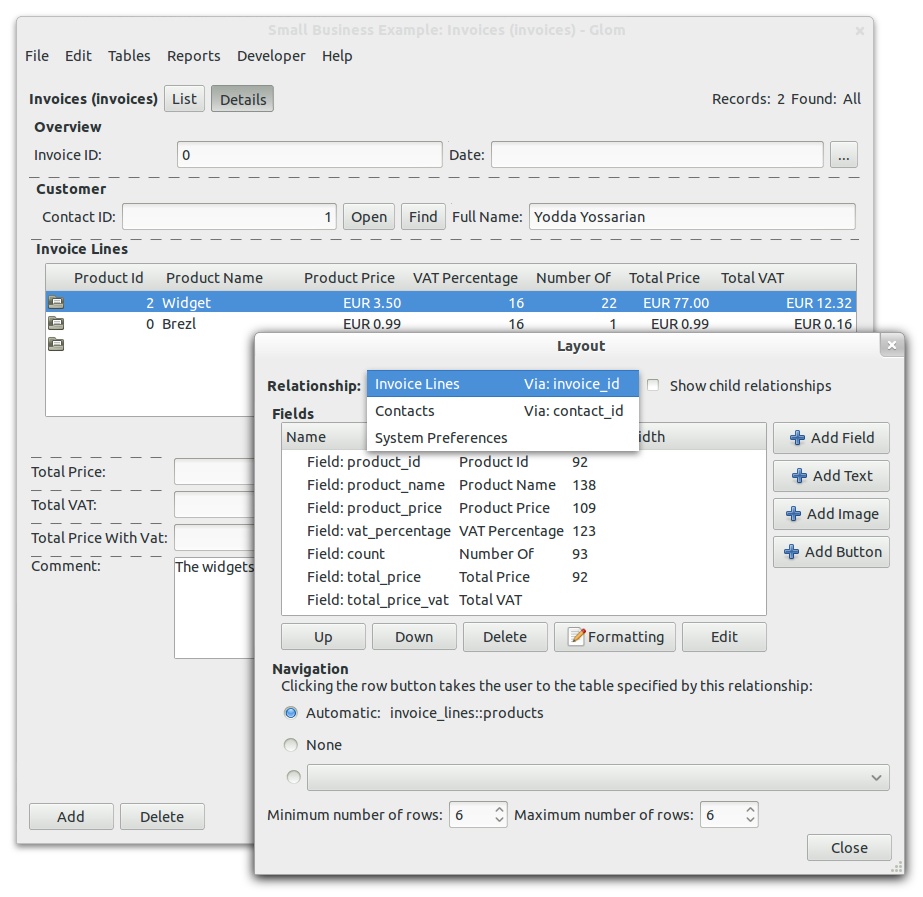
Right-click on the related records portal to choose the relationship that it shows, and which fields to show from the related table.
Designing the List Layout

Designing the list layout is simple - just choose the fields and their sequence. As on the details view, data will be shown and interpreted appropriately for the user's locale, and you may specify choices for the field data.
Designing the Layout - Related Fields
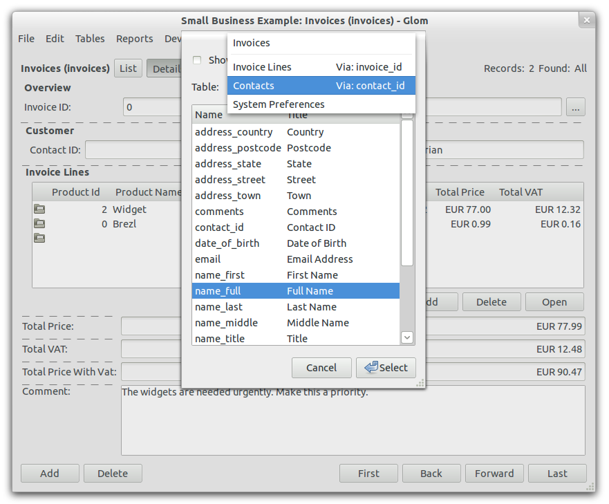
Both the Details and List layouts may contain fields from related tables. Just choose the relationship, and then choose from the list of fields in the related table.
Note that you can prevent editing of fields. For instance, maybe you don't want to edit the customer's name via the Invoice details, because this would then be seen on every other Invoice for that customer.
Designing the Layout - Formatting
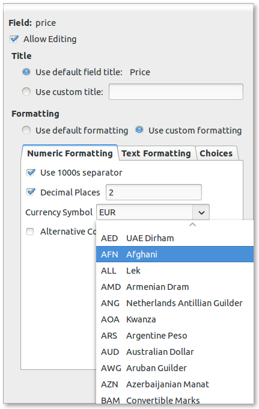
The default formatting for your locale is usually acceptable, but sometimes you need to make small changes. For instance, for a number field, you might want to show only two decimal places, or not show the thousands separator. Or you might want to show a currency symbol.
You can also prevent editing of fields. For instance, maybe you don't want to edit the customer's name via the Invoice details, because this would then be seen on every other Invoice for that customer.
Designing Reports

For each table, you can create reports that will be available to the operators. For instance, this report lists each contact, grouped by country, and then grouped by town.
Designing Users and Groups
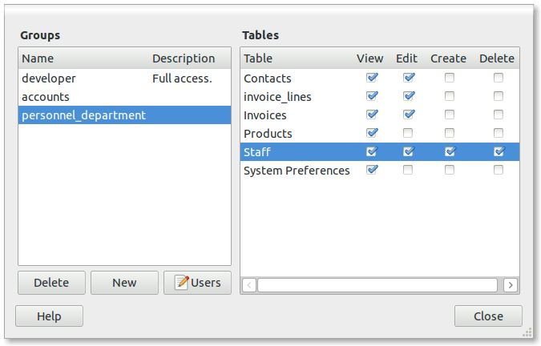
Not everyone should have equal access to all parts of the system, so you can assign users to groups which have appropriate permissions. For instance, people in the Personnel Department are allowed to create and delete records in the Staff table, but are not allowed to edit records in the Products table.